Isomerism
| Isomers have the same molecular formula, but different structures | |||||||
| Constitutional Isomers Differ in the order of attachment of atoms (connectivity); | Stereoisomers are molecules that have the same atomic connectivity, but different 3D spatial orientation of their atoms | ||||||
| CH3CH2CH2CH3 Butane |  Isobutane (2-Methylpropane) | Enantiomers Image and mirror image are not superimposable; | Diastereomers Not related as image and mirror image; | ||||
|  (R)-2-bromobutane | -2-bromobutane.png) (S)-2-bromobutane |
 cis-1,3-Dimethylcyclopentane |  trans-1,3-Dimethylcyclopentane | Geometric Isomersor or cis-trans isomers | |||
 cis-2-Butene |  trans-2-Butene | ||||||
Alkenes that have the same molecular formula but differ in the location of the double bond (such as 1-butene and 2-butene) are constitutional isomers that are also called double-bond isomers. A 1-alkene is also referred to as a terminal alkene; the others are called internal.
| CH2=CHCH2CH3 1-Butene (A terminal alkene) | CH3CH=CHCH3 2-Butene (An internal alkene and a double bond isomer of 1-Butene) |
Cis–Trans Isomers (formerly called geometric isomers) are a specific subtype of diastereomers in which substituents differ in their position around an immovable bond, such as a double bond, or the plane of a ring, such a cycloalkane in which the rotation of bonds is greatle restricted.
 cis-1,4-Dimethylcyclohexane |  trans-1,4-Dimethylcyclohexane |